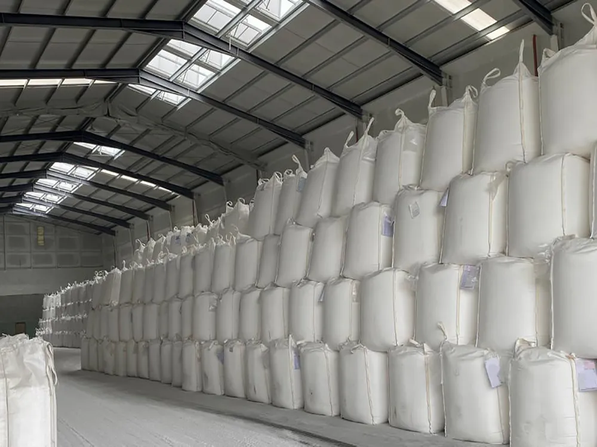
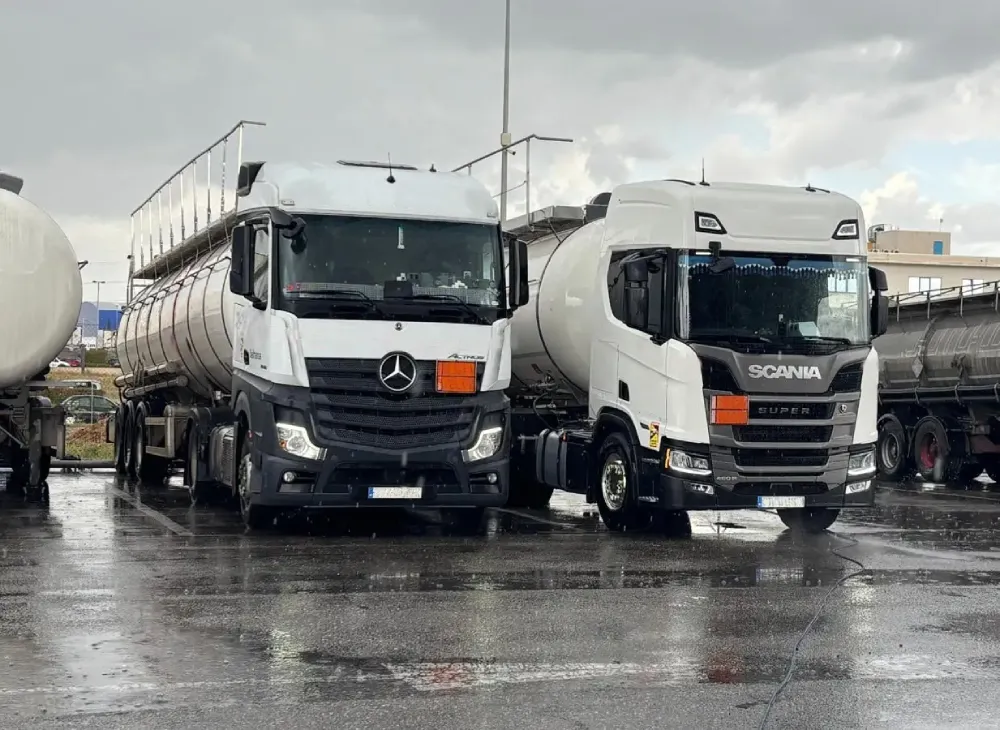
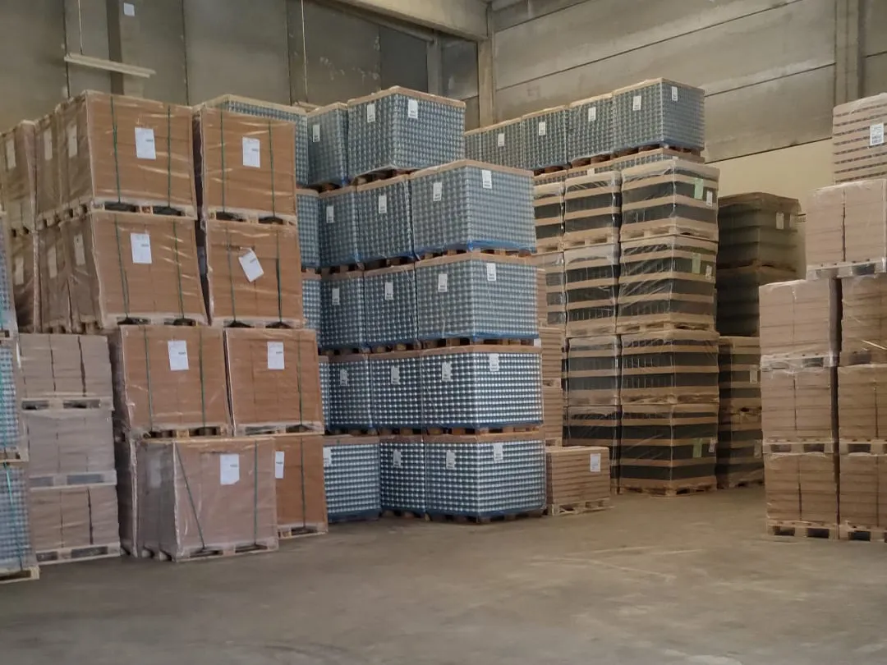
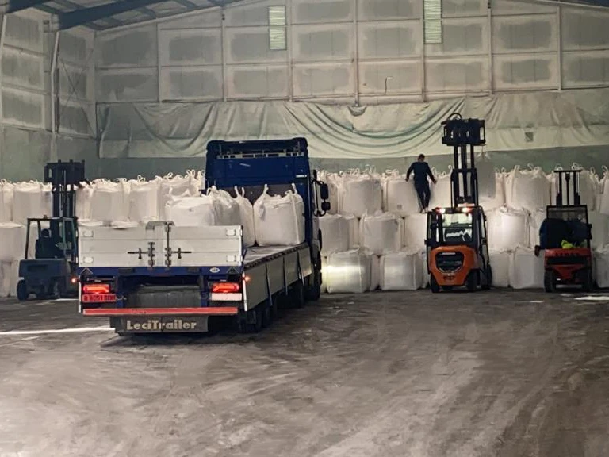
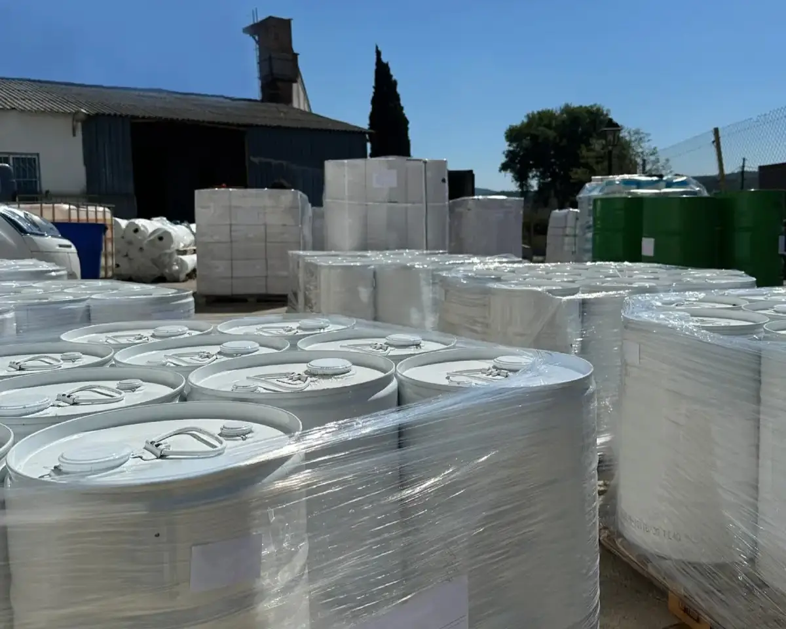
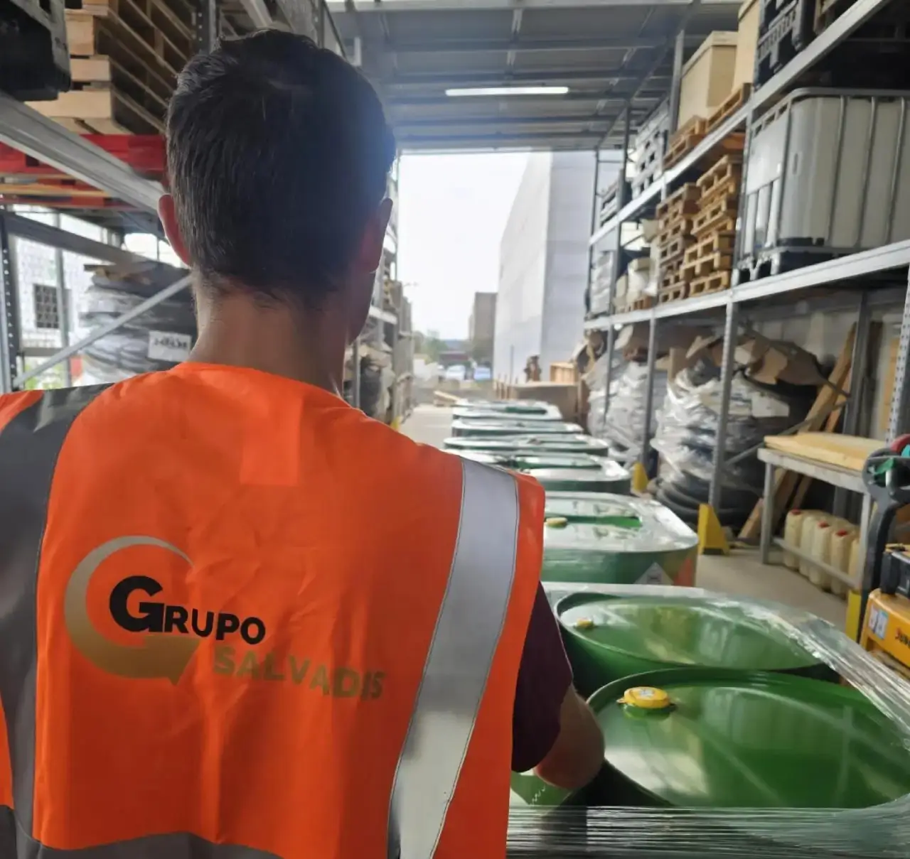
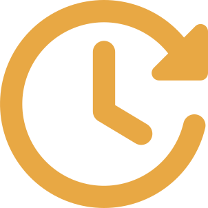

Ofrecemos soluciones para la gestión y recuperación de productos químicos y mercancías
industriales.
En Salvadis intervenimos en el salvamento y la gestión de mercancías complejas como
productos siniestrados, excedentes, stocks inmobilizados, productos acabados o
materiales no conformes dentro del entorno
industrial.
Coordinamos cada operación de principio a fin, desde la valoración inicial
hasta la recuperación, distribución o salida del producto, trabajando con una red de
colaboradores especializados y adaptando cada actuación a las características de la mercancía.
En Salvadis actuamos tras un siniestro para recuperar, clasificar y valorizar mercancías dañadas,
aplicando protocolos personalizados según el tipo de incidente (incendio, inundación, rotura de
cadena de frío, accidente logístico).
Cómo lo hacemos:
Inspección técnica y
recogida de muestras.
Protocolos adaptados a cada
producto y siniestro.
Documentación y
trazabilidad para aseguradoras y clientes.
Recuperación o retirada
según viabilidad.
Reducimos pérdidas y aseguramos la continuidad del negocio.
Valoración de Mercancías
Realizamos inspecciones técnicas y tasaciones para evaluar mercancías dañadas por golpes, agua,
fuego, caducidad o rotura de cadena de frío. Si no son recuperables, gestionamos con colaboradores
homologados su retirada y
destrucción segura.
Cómo lo hacemos:
Análisis de daños y
viabilidad.
Informe técnico con
valoración económica.
Asesoramiento sobre
recuperación y destino final.
Gestión documental y
trazabilidad.
Ayudamos a tomar decisiones rápidas y fundamentadas, minimizando riesgos legales y
económicos.
Compra y Venta de Productos
Damos salida a stocks, excedentes, rechazos o productos descatalogados mediante su compra-venta.
También realizamos tasaciones profesionales para optimizar el valor de los materiales.
Cómo lo hacemos:
Identificación y tasación
del material.
Compra directa o gestión de
la venta.
Acceso a red nacional e
internacional de clientes.
Operaciones transparentes y
documentadas.
Transformamos materiales inmovilizados en oportunidades de recuperación económica.
Retirada y Gestión de Mercancías
Coordinamos la retirada y gestión de productos inmovilizados, afectados o fuera de uso, desde el
punto de origen hasta su almacenamiento, recuperación o destino correspondiente.
Cómo lo hacemos:
Evaluación y valoración en
origen.
Coordinación de la retirada
y transporte.
Clasificación y
almacenamiento mediante colaboradores especializados.
Documentación, seguimiento
y trazabilidad del proceso.
Coordinamos el transporte de mercancías peligrosas y no peligrosas según las características
de cada producto y operación.
Distribución y Salida de Mercancías
Gestionamos la salida y distribución de mercancías recuperadas, conectando los productos con nuevos
destinos y clientes en España y otros mercados internacionales.
Cómo lo hacemos:
Planificación de la
distribución según las características del producto.
Coordinación del transporte
de mercancías peligrosas y no peligrosas.
Red nacional e
internacional de colaboradores.
Seguimiento y trazabilidad
de cada operación.
Una red de colaboradores que facilita una salida ágil y segura para cada mercancía.
Gestión de Material Remanente y Destino Final
Cuando la recuperación o valorización de una mercancía no es viable, facilitamos el acceso a
colaboradores especializados en el tratamiento de mercancía remanente, para encontrar una solución
adecuada para
cada producto.
Cómo lo hacemos:
Evaluamos opciones de
recuperación y valorización.
Buscamos la vía de gestión
más adecuada.
Conectamos con
colaboradores especializados.
Aseguramos la información y
trazabilidad.
Priorizamos la recuperación y valorización siempre que sea posible.
Infraestructura y gestión operativa
Para garantizar el correcto desarrollo de cada operación, coordinamos una red de almacenes e
instalaciones externas certificadas.
No actuamos como operador logístico directo, sino como gestor integral del proceso,
asegurando que cada fase, incluyendo el almacenamiento temporal, la manipulación o la distribución,
se realice a través de colaboradores especializados y bajo cumplimiento normativo
estricto.
Estas infraestructuras forman parte de nuestro modelo operativo, facilitando la
gestión de productos químicos, el almacenamiento seguro de mercancías
peligrosas y la coordinación logística en entornos industriales,
siempre adaptándonos a las necesidades específicas de cada operación.
Una red certificada que garantiza la seguridad y el cumplimiento
Red de almacenes colaboradores
Nuestra red de instalaciones externas está distribuida estratégicamente y preparada para el
almacenamiento y manejo de mercancías industriales de distinta naturaleza.
Cumplimiento ADR y
normativas medioambientales.
Control documental y
trazabilidad digital.
Manipulación adaptada al
tipo de producto.
Supervisión técnica
continua.






Seguridad y control en cada fase
Soluciones de almacenaje adaptadas a cada necesidad
Adaptamos cada operación a las características de la mercancía, garantizando un almacenamiento
seguro, controlado y trazable.
Procesos revisados y
supervisados.
Control documental y
trazabilidad.
Seguimiento técnico de cada
operación.
Red de operadores y
almacenes especializados.
Ventajas de trabajar con Salvadis
Una gestión ágil, transparente y adaptada a cada operación

Respuesta rápida y flexible
Gestión segura y responsable
Trazabilidad en todo el proceso
Red de colaboradores especializados
¿Necesitas gestionar mercancías industriales con seguridad y control?
En Salvadis coordinamos cada operación para garantizar trazabilidad, eficiencia y confianza.
 Inspección técnica y
recogida de muestras.
Inspección técnica y
recogida de muestras.